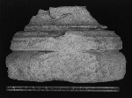
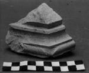
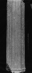
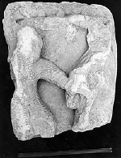
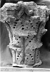
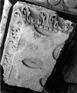
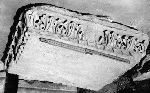
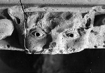

These benches would have been on the inside of the cloister arcade.
These benches would have been on the inside of the cloister arcade.
The sculptural and architectural elements shown here are all that remains of a romanesque cloister. None of these pieces were found in situ, but taken together they allow for a fairly complete reconstruction.
These benches would have been on the inside of the cloister arcade.
 Bases such as this rectangular example each supported a pair of bases, a pair of shafts, a pair of capitals, and a
pair of tailloirs (abacus blocks). Examples of these elements are shown below.
Bases such as this rectangular example each supported a pair of bases, a pair of shafts, a pair of capitals, and a
pair of tailloirs (abacus blocks). Examples of these elements are shown below.

The bases in the romanesque cloister were of varied form and profile. The two examples shown here are circular and
octagonal.


This fragment of an octagonal shaft sat on a base and supported a capital.
 Two fragments of a historiated capital were found in 1970, the first year of the excavations. The larger piece was holding open the door to the farmhouse and the smaller was decorating the garden. It depicts the massacre of the innocents and would have been on the inside of a pair so as to be more visible. It can be compared to a capital in the east gallery of St. Trophime in Arles. The surfaces of these pieces are very abraded.
 There were also corinthian capitals. This piece was used as filling inside a later wall. The surface is quite badly eroded, but several fragments which join with this piece show more detail. This type of capital would have been on the less visible courtyard side of the cloister.

This double tailloir, or abacus block, stood over two capitals. One can clearly see how carefully this piece was cut
to match the concave sides of capitals. The deep carving this piece is similar to that found in the north gallery of
Arles and at St-Guilhem-le-Désert currently in The Cloisters in New York.

This square tailloir could have been placed at a corner or in the middle of an arcade.

This fragment shows the extremely high quality workmanship of the cloister at Psalmodi.
The bases and tailloirs at Psalmodi are slightly smaller than those of the north gallery at Arles, and slightly larger than those at St-Guilhem-le-Désert. The carving of all three of these monuments is comparable.
The construction of the cloister probably precedes the construction of the Gothic church in the 1180s so that a date in the 1160s or early 1170s is likely. This may place the cloister at Psalmodi between the cloisters at Arles and St-Guilhem-le-Désert respectively.
{kind=link}
{kind=link}
{kind=link}
{kind=link}
{kind=link}
{kind=link}
{kind=link}
{kind=link}